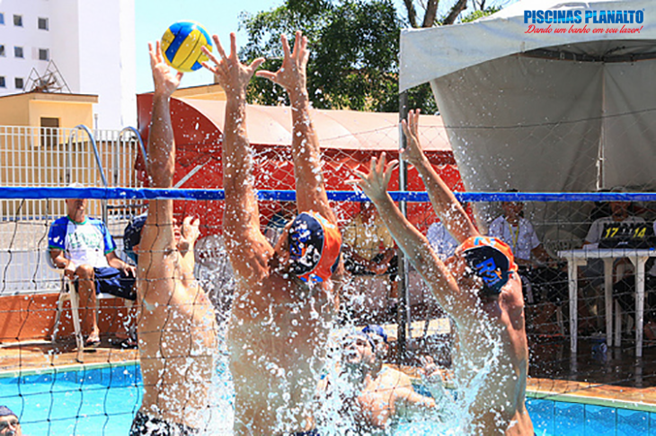

Tão antigos quanto o homem, os esportes são uma das invenções mais benéficas do homem. Além de manter o corpo saudável, ainda auxiliam na criação de uma séries de comportamentos psitivos, como a humildade, a união, a empatia, dentre outros.
E os esportes com bola são, sem nenhuma dúvida, os mais populars. Mas você sabe a diferença entre algunns deles? È justament isso que iremos descobrir abaixo.
| Espote | Origem | Ambiente | Objetivo | Equipe | ||
|---|---|---|---|---|---|---|
| 1 | |
Baseboll | EUA,1971 | Campo de 1/4 de cículo, de 92 a 108,2m de raio. | Realizar o maior número de corridas. | Nove jogadores em cada time. |
| 2 | |
Beach soccer | 1930, Brasil | Quadra de areia com 35 ou 37 m x 26 ou 27 de largura. | Realizar gols no campo adversária | Cinco jogadores em cada time. |
| 3 |  | Biriboll | 1968, Brazil | Piscina com 4 x 8 1,3m | Derrubar a bola na Quadraadversária | 2 a 4 jogadores por time. |
| 4 | |
frescobol | Brasil, 1946 | Ao ar livre | Manter a bola no ar pelo maior tempo possível. | Geralmente um cotra um. |
Saiba mais acessando o link